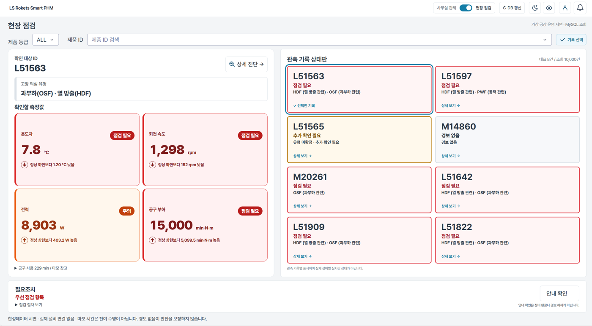
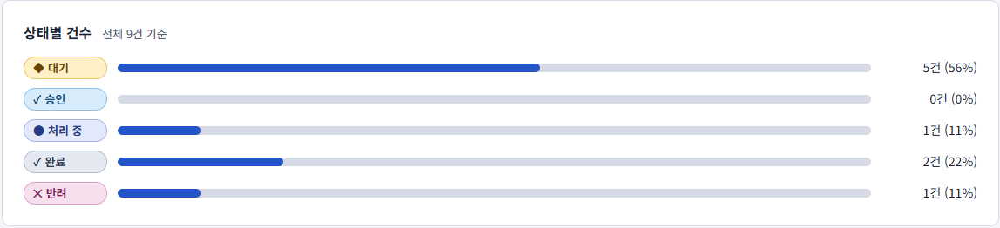

확인하는 방법
처음AI가 "됐다"고 하면 넘어갔습니다.
지금보고를 받으면 실제 상태를 열어 봅니다. 확인한 것과 못 한 것을 나눠 적습니다.
계기: 납기 알리미에서 AI가 "올렸다"고 보고했는데 실제로는 명령이 실패해 있었습니다.
개인 포트폴리오 · 2026년 11월 23일 기준
MRO 물류 업체에서 1년 4개월 일했습니다. 부트캠프에서 팀 프로젝트 세 개와 개인 프로젝트 하나를 했습니다. 그 과정을 증거와 함께 이 페이지에 적었습니다.
납기 알리미 예외 목록. 주문, 공급사, 연구원은 모두 가상입니다.
어디서 왔나
연구소에 상주하며 MRO 물품을 받아 검수하고 연구원에게 전달했습니다. 늦는 납기를 미리 알리지 못하던 일이 첫 개인 프로젝트의 출발점입니다.
숫자는 2026년 11월 23일에 GitHub와 채점 결과 파일에서 직접 센 값입니다. 업무 시간이 얼마나 줄었는지 같은 효과는 재지 못해서 적지 않았습니다.
시간 순서입니다. 카드를 누르면 아래 여정의 그 단계로 갑니다.
팀 프로젝트 1 · 2026.09
센서 값으로 고장을 판단하고 점검할 설비를 고르는 웹 대시보드입니다.
내 역할: 화면 요구사항, 숫자·그래프 검수, 발표
여정에서 보기 →
개인 프로젝트 · 2026.10 · 대표
늦어지는 주문만 골라 보여 주고 연구원에게 알렸는지 기록하는 Windows 앱입니다.
내 역할: 문제 고르기, 요구사항 결정, 단계마다 확인
여정에서 보기 →팀 프로젝트 2 · 2026.10 · 3명
발주할 상품을 걸러 보고 같은 화면에서 조치를 요청·승인하는 웹앱입니다.
내 역할: 요청·승인·관리 화면, 실제 데이터베이스로 직접 확인
여정에서 보기 →
팀 프로젝트 3 · 2026.11 · 4명 · 대표
관심 회사의 위험 점수를 공식 자료로 매기고 새 공고를 알려 주는 서비스입니다.
내 역할: 점수·사건·결정·새 공고 규칙과 채점 파일
여정에서 보기 →
도구 이름보다 일하는 방법이 어떻게 바뀌었는지를 적습니다. 근거는 아래 여정에 있습니다.
처음AI가 "됐다"고 하면 넘어갔습니다.
지금보고를 받으면 실제 상태를 열어 봅니다. 확인한 것과 못 한 것을 나눠 적습니다.
계기: 납기 알리미에서 AI가 "올렸다"고 보고했는데 실제로는 명령이 실패해 있었습니다.
처음화면 시안을 주고 만들어 달라고 했습니다.
지금문서와 규칙을 먼저 정하고 팀이 읽은 뒤에 만듭니다.
계기: 프로젝트 2에서 기능 문서를 먼저 PR로 올렸습니다. 프로젝트 3에서는 규칙마다 번호를 붙여 시험과 맞췄습니다.
처음팀이 만든 화면의 숫자와 그래프를 검수했습니다.
지금점수와 사건을 판정하는 규칙, 그 규칙이 맞는지 채점하는 파일을 맡습니다.
프로젝트 1은 검수, 프로젝트 2는 화면 한 조각, 프로젝트 3은 규칙과 채점입니다.
단계마다 누가 무엇을 했는지 나누고 열어 볼 수 있는 기록을 붙였습니다. 링크가 걸린 저장소는 모두 비공개라 권한이 있는 사람만 열립니다. 같이 만든 사람은 팀원 A·B·C로 적었습니다.
프로젝트 1 이전 기초
이 시기에는 남긴 기록이 없습니다. 증거 없이 쓸 수 있는 문장이 없어서 자세히 적지 않습니다.
2026.09.21 ~ 09.30 팀 프로젝트 1
센서 값으로 설비 고장을 판단하고 점검할 대상을 고르는 화면에서 상세 진단까지 이어지는 웹 대시보드입니다. 연습용 합성 데이터(AI4I 2020, 10,000행)를 썼습니다.
달라진 점AI가 만든 화면에서 근거가 없는 숫자를 빼 달라고 요구하기 시작했습니다.
2026.10.19 ~ 10.22 (커밋 기준) 개인 프로젝트 · 대표 작업
연구소에서 MRO 물류를 맡았을 때 연구원들의 불만은 두 가지였습니다. 늦는 것, 그리고 늦는다고 미리 알려 주지 않는 것입니다. 늦는 원인은 대부분 공급사 쪽이라 제가 바꿀 수 없었습니다. 그래서 "늦는다는 것을 안 때부터 알릴 때까지의 간격"을 줄이는 Windows 앱을 만들었습니다.
달라진 점AI가 일하는 순서와 규칙을 파일로 정해 두었습니다. 보고를 받으면 실제 상태를 열어 보게 됐습니다.
| 결정 | 이유 |
|---|---|
| 납기를 읽을 수 없는 주문을 숨기지 않고 표 맨 아래에 "확인 필요"로 보여 준다 | 읽지 못했다고 빼 버리면 안내 대상에서도 빠집니다. |
| 가상 데이터만 쓴다. 클라우드 저장은 연습 범위로만 두고 만들기 전에 요구사항 문서를 먼저 쓴다 | 실제 업무 데이터를 밖으로 내보낼 수 없습니다. |
| 항목 | 값 |
|---|---|
| 커밋 | 119건 (나흘) |
| 자동 시험 | 단위 386개, 눌러 보는 시험 19개 |
| Claude가 한 QA 46건 | Pass 44 · Fail 1 · No Run 1 |
| 사람이 직접 할 QA 39건 | Pass 19 · Fail 1 · No Run 19 |
사람이 직접 할 QA의 Pass 19건 가운데 4건은 Claude가 대신 확인했다고 적혀 있습니다. 절반은 아직 해 보지 못했습니다.
2026.10.28 ~ 10.30 (커밋 기준) 팀 프로젝트 2 · 3명
해외에서 상품을 들여오는 쇼핑몰의 재고 담당자가 "지금 발주해야 할 상품"을 한 화면에서 걸러 보고 같은 화면에서 조치를 요청하고 승인받는 웹앱입니다.
달라진 점혼자 만들 때와 달리 제 코드를 다른 사람이 읽고 고쳐 달라고 한 뒤에야 합쳐졌습니다. 저도 팀원의 PR을 읽고 숫자를 대조했습니다.
2026.11.18 ~ 11.23 (PR 기준) 팀 프로젝트 3 · 4명 · 대표 작업
구직자가 관심 회사를 등록하면 공식 자료(국세청, 외교부, 국민연금)로 회사의 위험 점수를 0.0에서 10.0 사이로 매기고 채용 사이트에서 그 회사의 새 공고를 찾아 알려 주는 서비스입니다. 점수가 떨어지거나 새 공고가 뜨면 사건이 생기고 사람이 승인해야 상태가 바뀝니다.
"어느 한 곳에만 올리고 다른 사이트에는 안올라오는게 있어서 … 놓치는 공고들이 있더라구요."
달라진 점판정이 맞는지는 채점 파일로 확인합니다. 그리고 채점이 통과해도 실제 흐름이 같은 규칙을 쓰는지 따로 봐야 한다는 것을 배웠습니다.
| 규칙 | PR | 한 일 |
|---|---|---|
| 점수 | #5 | 점수 계산과 점수 하락 판정, 감점표 초안 |
| 사건과 결정 | #7 | 사건과 알림을 만드는 규칙, 사람의 결정을 반영하는 규칙 |
| 채점 | #8 #21 | 처음 조회할 때의 기준 점수, 채점 파일, 채점 예시 추가 |
| 새 공고 | #12 | 회사 이름 정리, 공고와 회사 맞추기, 같은 공고 묶기 |
| 국민연금 | #18 | 실행 흐름에 연결. 이미 저장한 달은 다시 부르지 않게 함 |
| 점수 체계 v2 | #62 | 시작 점수 8.0, 가점, 고용 변화 반영 |
| 채점한 예시 | 맞힌 사건 | 놓친 사건 | 잘못 울린 알림 | 돌리지 못한 예시 |
|---|---|---|---|---|
| 23개 | 7건 | 0건 | 0건 | 4개 |
예시는 모두 27개입니다. 이 채점은 규칙만 본 것입니다. 수집부터 화면까지 이어서 돌려 보지는 않았습니다.
네 프로젝트 모두 가상 데이터나 합성 데이터로만 확인했습니다. 실제 업무에서 써 본 적이 없고 효과를 잰 숫자도 없습니다.
사람이 직접 할 QA의 절반(19건)을 아직 하지 못했습니다. 깨끗한 PC에 설치해 보는 시험도 하지 못했습니다.
사용 테스트를 하지 못했습니다. 점수 체계 v2의 숫자는 가정이고 실제 회사로 검증하지 않았습니다.
코드는 대부분 AI가 썼습니다. 제가 한 것은 문제 고르기, 규칙 정하기, 확인하기입니다. 다음에는 AI가 쓴 규칙 코드를 제가 직접 읽고 설명할 수 있는 범위를 넓히려고 합니다.
최영완